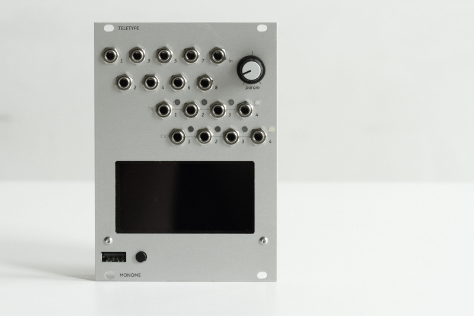

algorithmic ecosystem for modular synths.
teletype is a dynamic, musical event triggering platform. edit scripts with a USB keyboard which plugs into the front panel. syntax is simple and easy to learn with the provided tutorials, video, and reference pages. teletype runs without the keyboard attached: you might treat editing as precomposition, or leave the keyboard plugged in for live coding.
teletype is open source: both the firmware and hardware.
numerous contributors.
released in 2015. discontinued 2023.
originally $480.
monome — updated 12/08/23